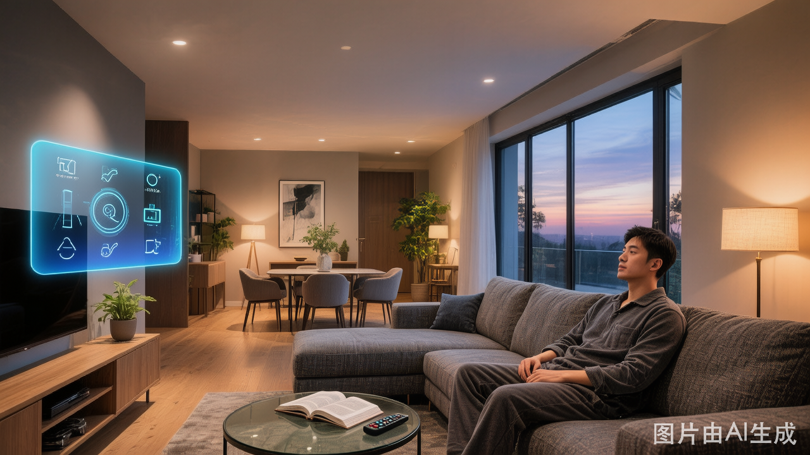

你有没有过这样的体验——深夜加班回家，推开门的那一刻，玄关灯光自动亮起柔和的暖光，客厅窗帘缓缓关闭，灯光色温从冷白无缝过渡到温馨的2700K，仿佛房子在说"欢迎回来，辛苦了"。
这不是科幻，这是2026年AI智能照明正在做的事。
第一跃迁：从"定时开关"到"场景自适应"
传统智能照明的逻辑是"如果A，则B"——如果有人走过，则开灯；如果到了22点，则切换夜灯模式。这种规则驱动的系统需要用户手动配置大量场景，结果是大多数人买回家后只用了"全开"和"全关"两个按钮。
AI改变了这个困境。通过融合多传感器数据（人体存在、环境光、温湿度、甚至心率手环），AI照明系统能够实时感知空间状态并自主决策。例如：
- 多人场景识别：检测到家庭聚会时自动调亮主灯、关闭氛围灯；检测到单人阅读时切换为局部高显色照明
- 学习型偏好：系统记录你连续两周在23:00后只开走廊夜灯，第三周开始自动执行，无需手动设置
- 跨设备联动：当空调检测到室温偏高，灯光自动降低亮度减少热辐射；电视播放电影时灯光自动进入影院模式
第二跃迁：从"手动调光"到"节律跟随"
人因照明（Human Centric Lighting）是2026年照明行业最火热的关键词。其核心理念是：灯光应该跟随人体生物钟节律变化，而非让人去适应灯光。
科学研究表明，不同色温和照度的光线会显著影响人体褪黑素分泌。4500K以上的冷白光抑制褪黑素，适合上午工作；3000K以下的暖光促进褪黑素，适合晚间放松。AI节律照明系统能够：
- 根据地理位置和日期计算日出日落时间，动态调整全天色温曲线
- 结合天气API，阴天自动补光，晴天适当降低照度
- 读取健康设备数据，检测到用户心率下降（入睡信号）时，灯光在5分钟内渐暗至关闭
第三跃迁：从"坏了再修"到"预测性维护"
商用和工业照明场景中，灯具故障的响应速度直接影响运营成本和用户体验。传统模式下，灯坏了靠人报修，维修人员到场排查，整个周期可能长达数天。
AI驱动的预测性维护正在改写这个流程：
- 驱动电源寿命预测：通过监测LED驱动器的输出电流波动、温升曲线和功率因数变化，AI可以在故障发生前2-4周发出预警
- 光衰趋势分析：持续追踪光通量衰减数据，当输出降至初始值70%（L70标准）前主动推送更换建议
- 网络健康监控：Zigbee mesh网络中，AI实时分析节点信号强度和丢包率，在设备离线前优化路由路径
Zigbee：AI照明的隐形基础设施
说到AI照明，很多人想到的是算法和云端，却忽略了底层的通信协议。没有稳定的设备互联，再强的AI也只是空中楼阁。
Zigbee之所以成为AI照明的首选协议，有三个不可替代的优势：
涂鸦智能的Zigbee方案已经实现了"云端AI推理+本地Zigbee执行"的混合架构：AI在云端分析用户习惯生成场景策略，策略下发到Zigbee网关本地执行，既享受AI的智能又保证了可靠性。
写在最后
2026年的AI照明，不是给灯泡加个语音助手那么简单。它是一场从"人适应光"到"光适应人"的范式转移——场景自适应解放了双手，节律跟随守护了健康，预测性维护降低了成本，而Zigbee为这一切提供了坚实的通信基础。
下一次你走进一个灯光恰到好处的空间，也许不是巧合，而是AI在默默守护你的光影体验。
本文由 Nexlamp 技术团队撰写，专注于涂鸦Zigbee智能照明产品与解决方案。